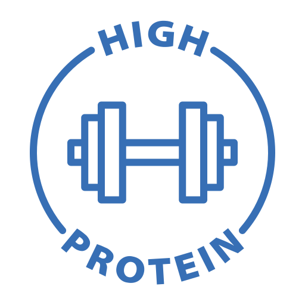
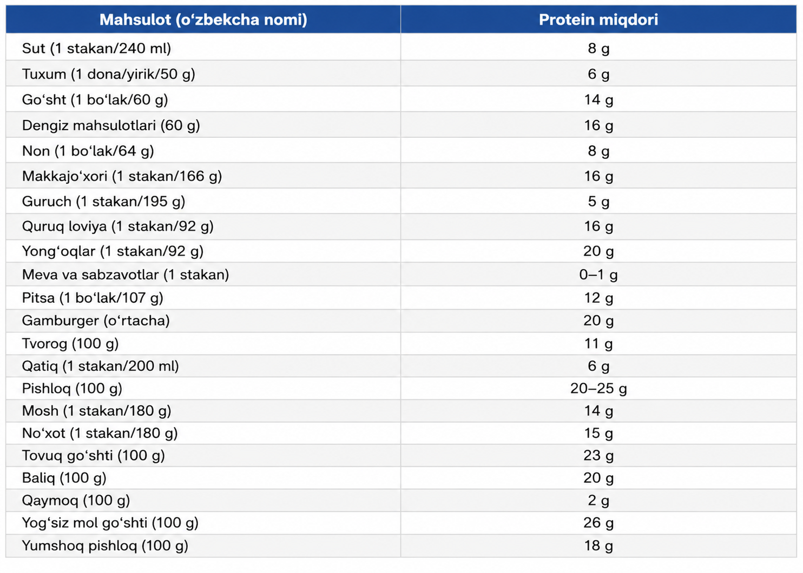

Davom etish uchun ismingizni kiriting
Protein — organizm uchun muhim oziq modda bo'lib, mushaklar, teri, soch va boshqa to'qimalarning qurilishi hamda tiklanishida ishtirok etadi. Ayniqsa sport bilan shug'ullanuvchilar uchun protein mushaklarning o'sishi va mashg'ulotdan keyingi tiklanish jarayonida muhim ahamiyatga ega.
Ushbu ko'rsatkich sizning jismoniy faolligingiz, vazningiz, yoshingiz va maqsadingiz asosida hisoblanadigan umumiy fitness bahosidir. Yuqori natija odatda faol turmush tarzini, pastroq natija esa jismoniy faollikni oshirish mumkinligini anglatadi. Bu ko'rsatkich tibbiy tashxis emas, balki sog'lom ovqatlanish va mashg'ulot rejasini tanlashga yordam beruvchi yo'riqnoma hisoblanadi.
Homilador yokida kasal ayollar tanasi odatda belgilangandan biroz ko'proq oqsil talab qiladi.
Kerakli ma'lumotlarni kiritganingizdan keyin albatta "Hisoblash" tugmasini bosing! Ma'lumotlaringiz kiritilgan holda saqlanib qoladi va shu ma'lumotlarga asoslanib kunlik oqsil miqdori hisoblaniladi. "Hisoblash" tugmasini bosganiningizdan so'ng, boshqa sahifaga yo'naltirilasiz va u yerdan har kunlik istemol qilgan oqsil miqdoringizni nazorat qilishingiz mumkin.
